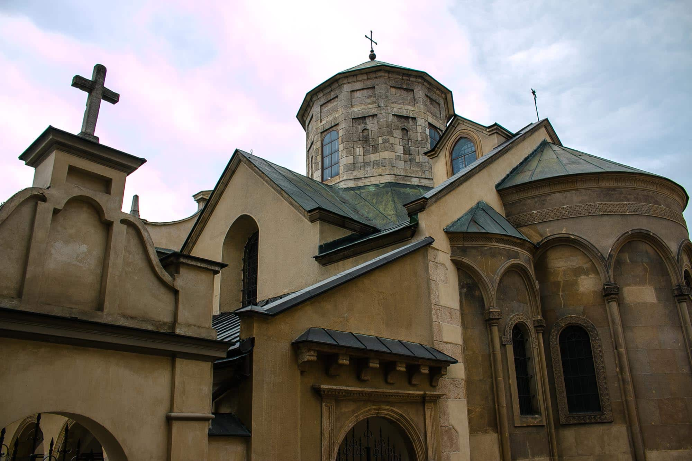
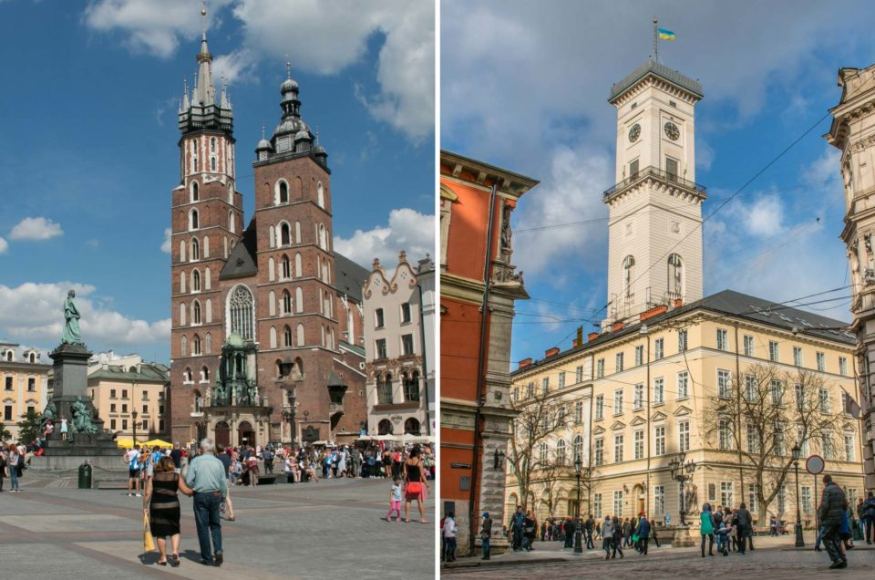

- Home
- About us
- Free Tours
- Private Tours
- Blog
- Contact

Free Walking Tours
THE BEST-RATED FREE TOURS IN LVIV

Lviv Free Walking Tour - Must See
The Cultures of Lviv is one
of our daily Lviv Free Walking Tours.
Lviv has so many faces even today.
Just imagine how many times it has
already changed it's appearance until
now! This is …
3 Hours
Lviv Free Walking Tour - Hidden Secrets
Most tourists come to Lviv,
only to see those places that
they have been reading about
or seen before. But Lviv offers
so much more. Countless palaces,
churches, houses, square, monuments
and restaurants, that would …
3 Hours
Lviv Free Walking Tour - Must See
There are just things you have to see,
and our Lviv Free Walking Tour - Must See will
bring you to those essential places that our
beautiful city is famous for.
But instead of telling you dates and ...
2 Hours
Private Walking Tours
UNIQUE DISCOVERIES IN THIS WONDERFUL CITY
Tour of Lviv Folk Architecture
Museum Shevchenkivsky Hay
It is one of the most special
places and a definite must
visit site in Lviv - the
Folk Architecture Museum Shevchenkivsky Hay
. It resembles the best display
of rural life in Western Ukraine.
2 Hours
Lviv Custom Private Tour
Depending on your needs a Lviv
custom private tour can be the
ideal service to make the most
out of your visit to the city.

Jewish Lviv Walking Tour
Once one of the most thriving
Jewish cities in Eastern Europe,
now you need to look closely to
find traces. With us you can reveal
the rich Jewish history of Lviv.
3 Hours
Free Walking Tours
THE BEST-RATED FREE TOURS IN LVIV
Day trip to Drohobych from Lviv
Drohobych is one of the most
underrated cities in Western Ukraine.
While it is the second biggest city
in Lviv Oblast it only gets a tiny
fraction of the tourists that Lviv gets.
This hidden …
8 Hours
Day trip from Lviv to Tarakaniv
Fort, Dubno and Kremenets
Just around 100 Kilometers to the
east of Lviv one can find beautiful
small towns with a lot of history
and some fortresses that are simply
stunning. Our day trip from Lviv
to Tarakaniv Fort, …
8 Hours
Pochayiv Lavra Day trip from Lviv
A daytrip to one of the most
beautiful monasteries of Ukraine and
a dive into Ukrainian religious culture.
8 Hours
Free Walking Tours
THE BEST-RATED FREE TOURS IN LVIV
Dozens of happy customers have
left us reviews on Tripadvisor
and made us the No. 1 Tour Company
out of 42 in Lviv on this platform.
We have 96% Five-Star-ratings,
which is more than any other touristic
company in the city. People left
us those not only for our Free
Walking Tours, but also for
our custom private tours,
our friendly service and the various
bonuses that customers enjoy on
our tours. Please visit our
review page on Tripadvisor
to see yourself why you
will have the best time with us in Lviv!
Peter and his guides from Lviv
Buddy are THE tour operator in Lviv.
I can really recommend their tours
to everyone. You don't only get
a brief overview about the highlights
and sights of Lviv, you can even
dive deeper into it on one of
their themed tours. And in the evenings
you can explore the nightlife on the
Craft Beer Tour or on the Lviv Pub
Crawl - very cool idea! Peter and
his team know the city very well
and can answer all questions about
nice locations and places
to go out in the city.
Being a tour guide myself, I can
tell you that Peter and the
other Lviv Buddies do city
tours right. Interesting facts,
personal touches and a unique style
make the tours some of the
best that I visited. Lviv might
not be as wild as Alaska,
but with Lviv Buddy you definitely
find the wildest spots in this
beautiful city. And the best
of all: Through the tours I could
connect with other travellers and
locals. My trip to Lviv would not
have been the same without them,
so be sure not to miss out on this.
Free Walking Tours
THE BEST-RATED FREE TOURS IN LVIV
Peter Althaus
CHIEF BUDDY
CHIEF BUDDY
Rita Aloshkina
KNOWLEDGE BUDDY
KNOWLEDGE BUDDY
Bohdan Ivakhiv
FUNNY BUDDY
FUNNY BUDDY
Free Walking Tours
THE BEST-RATED FREE TOURS IN LVIV
September 4, 2018
We are hiring: Freelance tour guides for Jewish tours
Lviv Buddy is the fastest growing,
best-rated tour company in Lviv...
Read More
>
September 4, 2018
We are hiring: Freelance tour guides
who speak Polish, German, Spanish or Turkish
Lviv Buddy is the fastest growing
tour company in Lviv that serves...
Read More
>

February 18, 2018
How to get from Krakow to Lviv
There are numerous possibilities to
travel from Krakow to Lviv.
Perhaps one of the key factors...
Read More
>
Contact Info
Info hotline in English and for Whatsapp/Viber:
+380-67-201-5297
Meeting point for all public tours:
Amphitrite fountain at Rynok (next to Pravda Beer Theatre)
Join us in the networks!

stochkomira@gmail.com